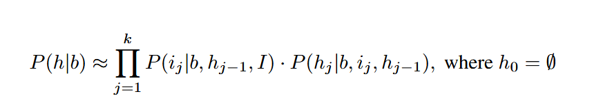
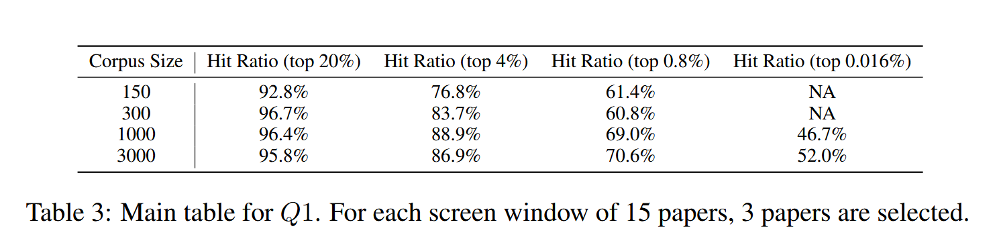
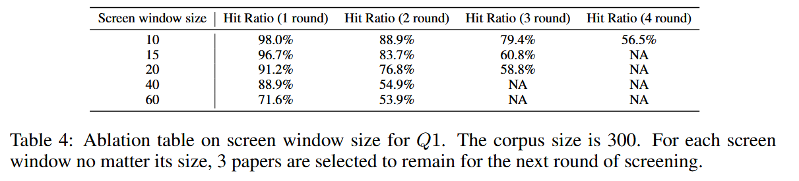
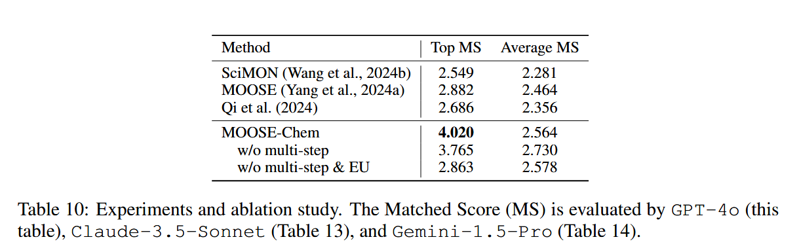
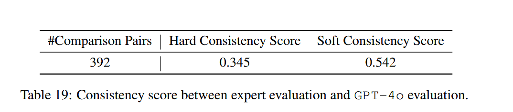
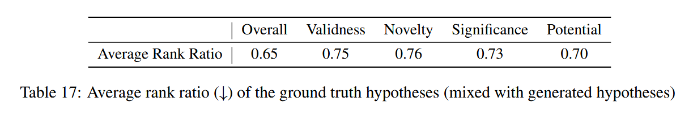
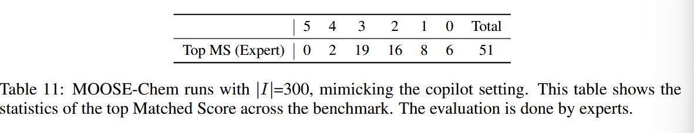
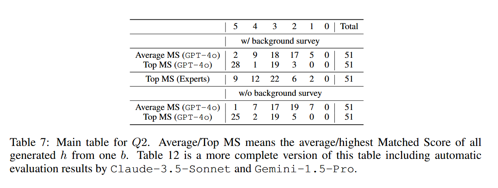

科学发现在很大程度上促进了人类社会的繁荣，最近的进展表明，LLMs可能会催化这一过程。然而，目前尚不清楚LLMs是否能在化学中发现新颖有效的假设。在这项工作中，我们研究了一个核心研究问题：LLM能否在仅给定化学研究背景（由研究问题和/或背景调查组成）的情况下自动发现新颖有效的化学研究假设，而不受研究问题领域的限制？经过与化学专家的广泛讨论，我们提出了一个假设，即大多数化学假设都可以从研究背景和几个启示中得出。有了这个关键的见解，我们将中心问题分解为三个较小的基本问题。简而言之，它们是：（1）给定一个背景问题，LLMs是否能获得良好的灵感；（2） 结合背景和启示，LLMs是否可以导致假设；以及（3）LLM是否能够识别出好的假设以对其进行更高的排名。为了研究这些问题，我们构建了一个基准，由2024年发表在《自然》、《科学》或类似水平上的51篇化学论文组成（自2024年以来，所有论文都只能在网上获得）。每篇论文由化学博士生分为三个部分：背景、灵感和假设。目标是重新发现这一假设，只考虑背景和一个由真实灵感论文组成的大型随机选择的化学文献语料库，其中LLM用2023年之前的数据进行训练。我们还开发了一个基于LLM的多代理框架1，该框架利用了这一假设，由三个阶段组成，反映了三个较小的问题。所提出的方法可以重新发现许多与基本事实非常相似的假设，涵盖了主要创新点。
我们研究了这个核心研究问题：LLM能否在只提供化学研究背景（由研究问题和/或背景调查组成）的情况下自动发现新颖有效的化学研究假设（即使在自然水平上），而不受研究问题领域的限制？通过与化学专家的广泛讨论，我们发现社会科学中使用的假设，即假设可以分为背景和灵感，也适用于大多数化学假设。这并不奇怪，因为认知科学研究表明，创造性思维往往是由两个看似无关的知识片段的紧密联系产生的（Koestler，1964；Benedek等人，2012；Lee&Chung，2024）。一个主要的区别是，化学可能需要不止一个灵感（例如，添加几个成分来组成一个新的化学系统）。有了这个关键的见解，我们将看似不可能解决的中心问题分解为三个更小、更实用、更可执行的基本问题，总结起来，这些问题应该非常接近中心问题的一组充分条件。具体来说，较小的问题是：（1）法学硕士能否识别出有可能帮助解决给定研究问题的灵感论文；（2） 仅给定已知知识（来自背景和灵感），LLM是否可以推断出极有可能有效的未知知识；以及（3）LLM是否能够识别好的假设并将其排名更高。
科学史上，重大突破常源于看似无关领域的知识联结。但传统科研受限于人类认知边界，每年仍有海量潜在关联未被发掘。最新发表在ICLR2025的论文MOOSE-Chem揭示：大语言模型已具备重构顶级化学假说的能力，其核心突破在于三阶段认知模拟框架。
🔍 背景：化学假设发现的“不可能三角”
科学发现对人类社会的繁荣至关重要，而最近的进展表明，LLMs有可能加速这一过程。本文的核心研究问题是：LLMs是否能够在仅给定化学研究背景（研究问题和/或背景调查）的情况下，自动发现新颖且有效的化学研究假设？ 通过与化学专家的广泛讨论，作者提出了一个假设：大多数化学假设可以由研究背景和若干灵感生成。基于这一假设，作者将核心问题分解为三个更小的问题：
- LLMs能否从给定的背景问题中检索到好的灵感？
- 在给定背景和灵感的情况下，LLMs能否生成假设？
- LLMs能否识别好的假设并将其排名更高？
为了研究这些问题，作者构建了一个基准数据集，包含51篇2024年发表在《Nature》、《Science》或类似级别期刊上的化学论文，每篇论文被分解为背景、灵感和假设三部分。
Yang等人（2024b）首先发现，LLM可以生成由专家评估的新颖且足够有效的假设。他们专注于社会科学领域，通过开发一个多智能体系统来进行发现，利用了一个假设，即大多数社会科学假设可以分为研究背景概念和灵感概念。这一假设在很大程度上是有效的，因为社会科学假设是关于自变量如何影响另一个因变量的（Hair等人，2007）。
现有方法（如Sprucill等2023年的催化剂发现研究）局限于特定领域，他们的评估取决于LLM是否可以重新发现现有的商业使用的催化剂，这可能会受到数据污染问题的影响。而MOOSE-Chem首次提出“背景-灵感-假设”三元分解理论 ，将复杂问题拆解为可执行的子任务，开创了跨领域科学发现的新路径。
🛠️ 技术突破：MOOSE-Chem的三重进化
作者提出了一个基本假设：大多数化学假设可以由研究背景和若干灵感生成。基于这一假设，作者将看似无法解决的 P(h∣b)分解为多个可执行的步骤：

其中，b是背景知识，i是灵感知识，h是假设，I是化学文献库。
MOOSE-Chem框架包括三个阶段：
- 灵感检索：从化学文献库中检索灵感论文。
- 假设生成：利用检索到的灵感生成假设。
- 假设排序：对生成的假设进行排序。
框架的设计基于进化算法，通过多步灵感检索和组合，生成多样化的假设，并使用高效的排序方法对假设进行排名。
1️⃣ 灵感检索：从噪声中捕捉信号

通过LLMs对3000篇顶级化学文献进行筛选，MOOSE-Chem超过75%的真实灵感甚至只被化学文献语料库中4%的选定论文所涵盖（表3），意味着仅需扫描文献库的4%即可覆盖75%的真实灵感来源。其核心在于：
- 语义无关性优先：刻意避开与背景直接相关的文献（如引用或近邻），转而探索隐性关联
- 动态窗口筛选：15篇/次的滑动窗口设计（表4），兼顾效率与准确性

基准数据集名为TOMATO-Chem，旨在分析LLMs在三个小问题上的能力，并挑战LLMs在仅给定研究背景的情况下重新发现顶级化学假设的能力。每篇论文被分解为以下部分：
- 背景问题、背景调查、灵感论文标题及其原因、研究假设、实验、推理过程、灵感总结。
基准数据集由51篇化学和材料科学论文组成，所有论文均在2024年发表并在互联网上公开。
最先进的LLM可能已经知道许多能够关联以创建新知识的知识对，而任何科学家都不知道这些知识对是相关的
2️⃣ 假设生成：进化算法驱动创新
传统方法（如MOOSE框架）依赖单一灵感整合，而MOOSE-Chem引入进化单元（EU） ：
- 突变-选择-重组：生成多个假设变体，通过有效性、新颖性、清晰度、显著性四维反馈迭代优化
- 多步灵感融合：支持1-3个灵感的渐进式组合，模拟人类“渐进式创新”思维

实验显示，加入EU后假设的Top匹配分数（MS）从2.863跃升至4.020 （表10），证明进化机制显著提升假设质量。
3️⃣ 假设排名：科学价值的量化之道
MOOSE-Chem创新性地将假设评估分解为四个维度：
✅ 有效性（Validness） 🎯 新颖性（Novelty） 💡 显著性（Significance） 🚀 潜力（Potential）
表19显示了专家评估和自动评估（通过GPT-4o）在MS上的一致性。只有当两个分数完全相同时，硬一致性才指定为1，否则指定为0。只有当两个分数之间的绝对差小于2时，软一致性才被分配为1，否则被分配为0。

有趣的是，表17显示了结果，其中我们为每个基本事实假设分配了奖励值R（h）（就有效性、新颖性、显著性和潜力而言），并计算了其关于框架生成的假设的平均排名比。

📊 数据见证：从理论到实践的跨越
在模拟真实科研场景的实验中（|I|=300文献库），MOOSE-Chem生成的假设：
- 19/51篇达到专家评分3分以上（表11），意味着覆盖至少两个关键创新点

- 28/51篇的Top假设与真实假设高度吻合（表7）

例如，在电催化氘化反应研究中，MOOSE-Chem成功复现了氮掺杂钌电极的核心设计，同时提出混合溶剂系统等延伸创新。
🌟 未来：AI与人类智慧的共生之路
MOOSE-Chem的启示远超技术层面：
- 知识关联的暗物质：LLMs可能已掌握大量未被人类察觉的知识关联（Tshitoyan等2019）
- 科学发现的民主化：通过降低创新门槛，加速边缘学科交叉突破
- 评估体系的重构：传统同行评审可能需要引入AI动态验证机制
正如论文结尾所言：“科学发现不仅是知识的积累，更是灵感的碰撞。MOOSE-Chem展示了AI如何在未知的化学海洋中点亮灯塔🚀，而真正的航行仍需人类智慧的舵手。”
参考文献
Yang et al. MOOSE-Chem: Large Language Models for Rediscovering Unseen Chemistry Scientific Hypotheses. ICLR 2025 .
Tshitoyan et al. Unsupervised word embeddings capture latent knowledge from materials science literature. Nature 2019 .